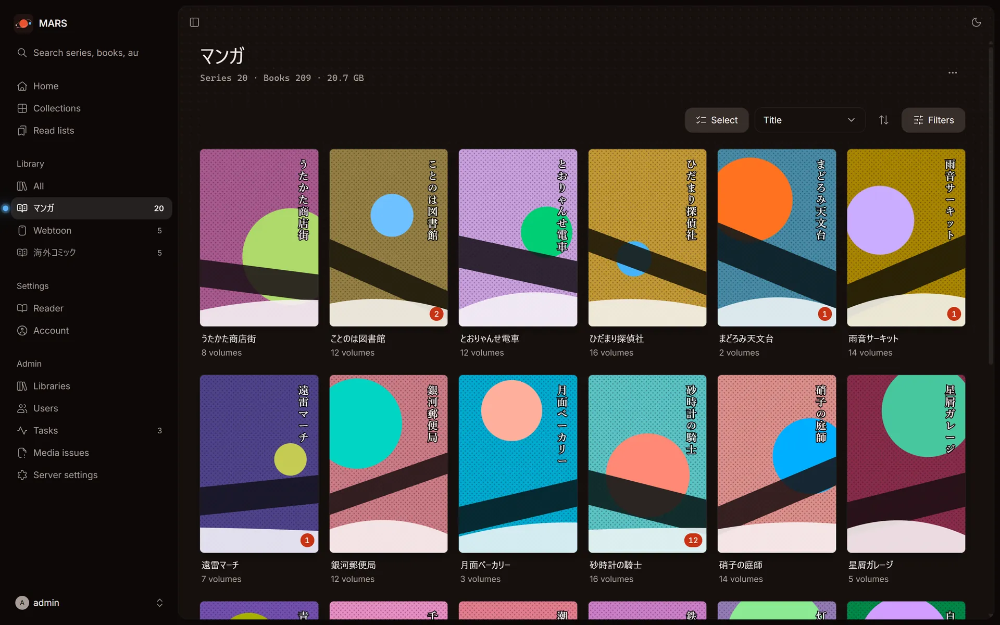
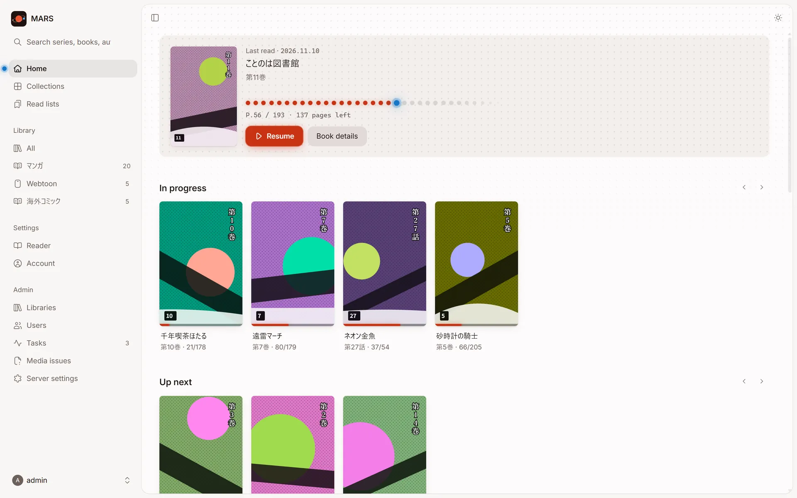
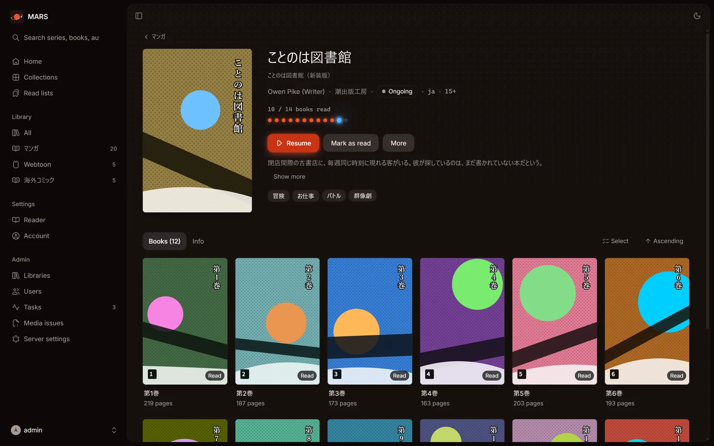
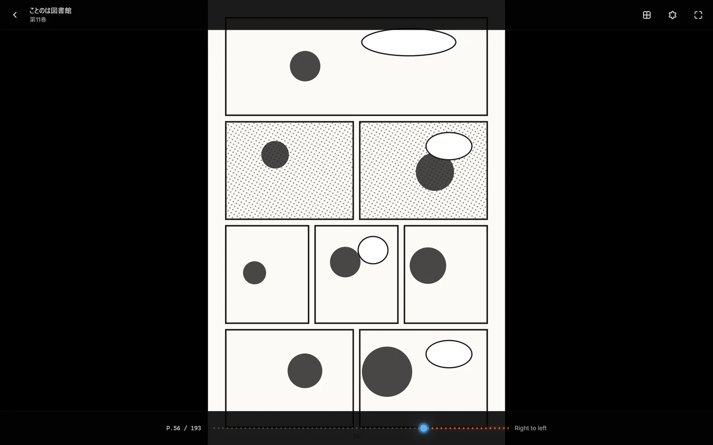
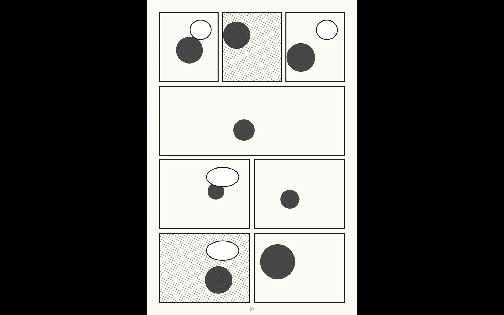
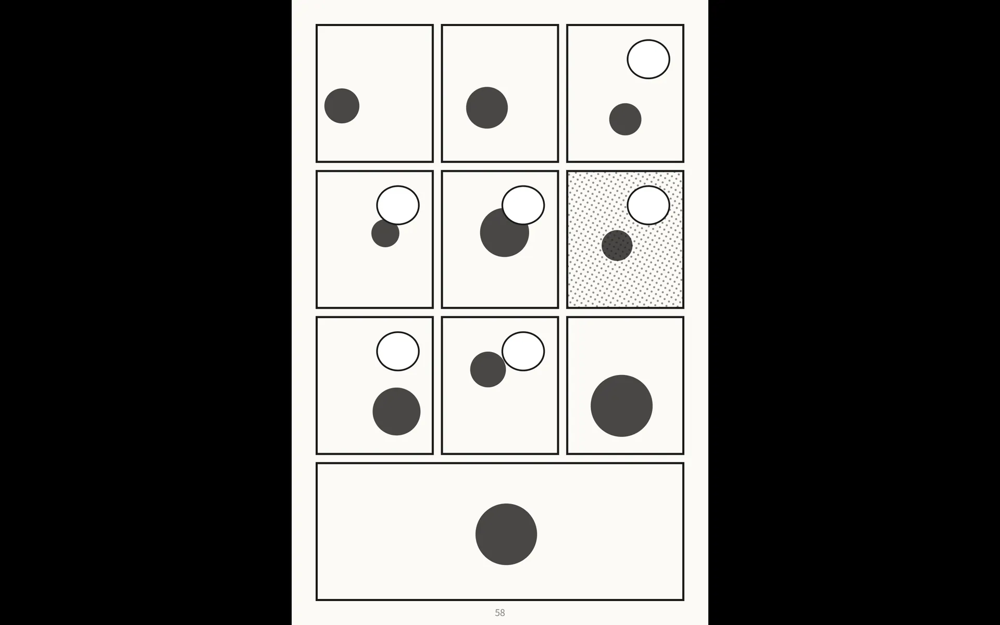
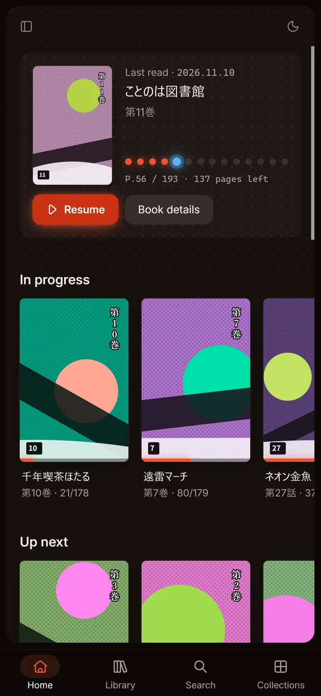
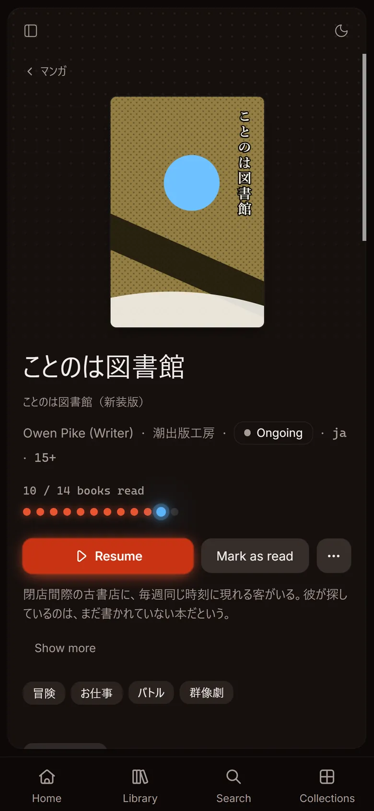

Point it at a folder
CBZ, CBR (including RAR5), CB7 and PDF. Series and volumes come from your folder layout and ComicInfo.xml, and MARS can watch the folders to pick up new books on its own.
MARS is a lightweight, self-hosted server that lets you read your own manga and comics in any browser. No Java, no external database.
docker run -d -p 25600:25600 -v mars-data:/data -v /path/to/comics:/comics:ro ghcr.io/tabunugoku/mars:1



CBZ, CBR (including RAR5), CB7 and PDF. Series and volumes come from your folder layout and ComicInfo.xml, and MARS can watch the folders to pick up new books on its own.

Right to left, two-page spreads and webtoon scrolling. Your place syncs across devices, and the next volume is one tap away when you finish.
Choose which libraries each user can see and what they may do. OPDS 1.2 and a Komga-compatible API let you read from Mihon and OPDS apps too.
One Go binary and a Docker image of about 8 MiB. After scanning 109 books it used about 51 MiB of memory. Runs on amd64 and arm64.
Manga turns right to left, and spreads show the cover on its own. Webtoons scroll as one long strip, and you choose how pages fit and the background colour.



Open MARS over HTTPS and add it to the home screen of a phone or tablet to use it like an app.


Start the container with Docker.
Enter the setup token from the start-up log and create the administrator.
Add your manga folder as a library.